DaunPOS Next-Gen
Design kit & sistem antarmuka aplikasi kasir modern multi-industri untuk Android — smartphone & tablet. Desain asli dikembangkan di OpenPen / Pencil Studio (DaunPOS.pen) dengan ikon vektor SVG Lucide standar perbankan/retail dan token visual 1:1.
Multi-Industri, Onboarding & QRIS Dinamis OPENPEN BARU
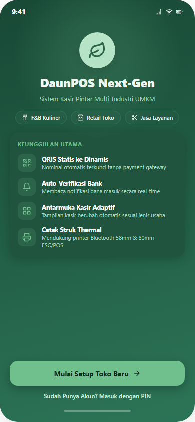
10. Splash & OnboardingBranding daun, 3 pilar kategori & keunggulan utama
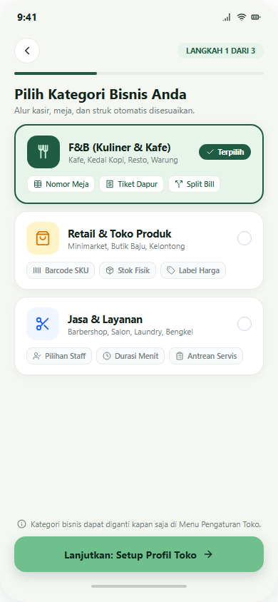
11. Pilih Kategori Bisnis3 Card besar ber-shadow (F&B, Retail, Jasa) & tag ikon
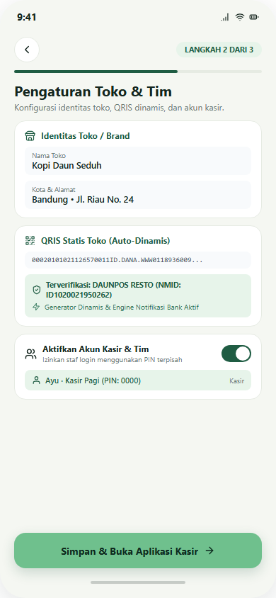
12. Setup Toko & TimProfil toko, QRIS statis-ke-dinamis & akun kasir
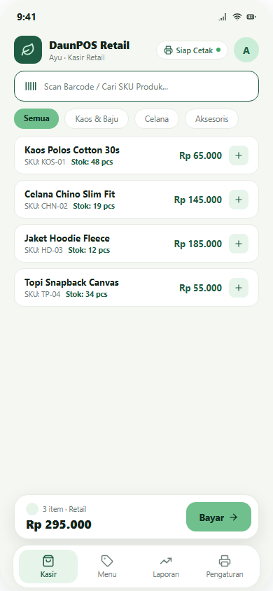
13. POS Mode RetailScan barcode SKU, stok fisik, keranjang & tab bar
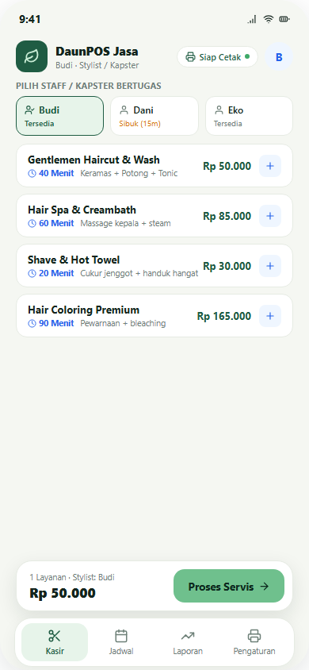
14. POS Mode JasaPilihan kapster/staff, durasi servis & antrean
Phone — Alur Kasir F&B Bawaan (390 px)
01. Login & KoneksiPIN kasir + brand 02. POS / KasirKategori, grid menu, keranjang 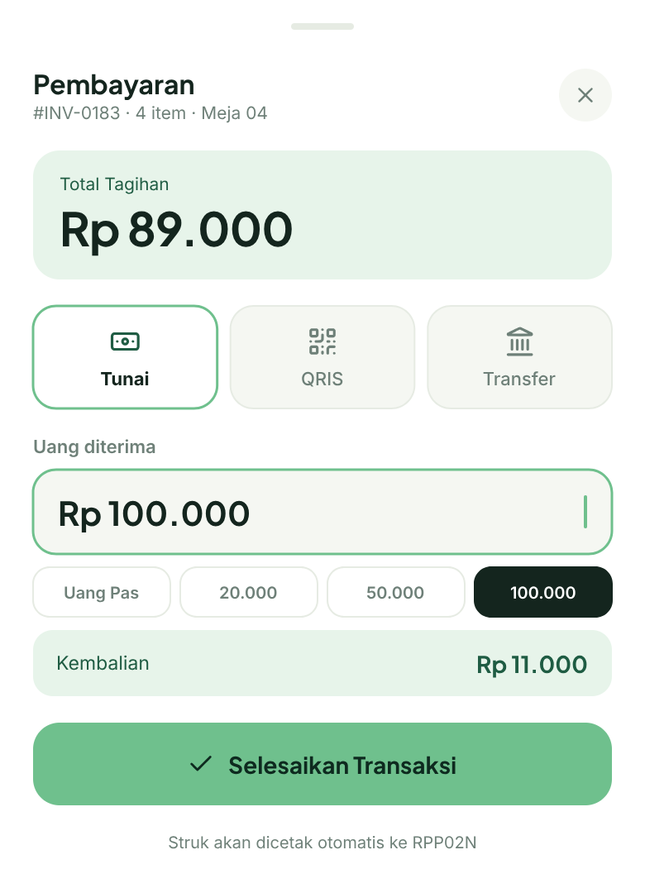
03. PembayaranTunai, QRIS, Transfer + kembalian 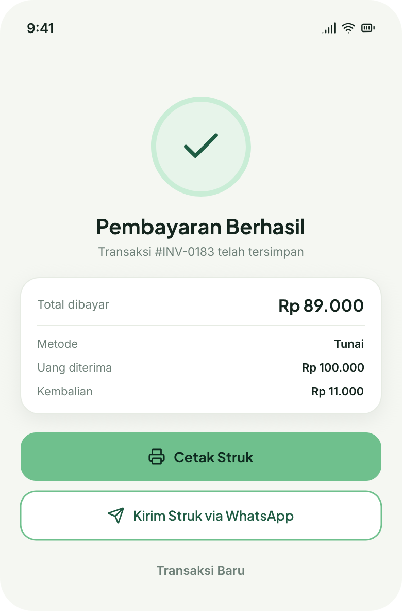
04. Transaksi BerhasilCetak struk / kirim WhatsApp 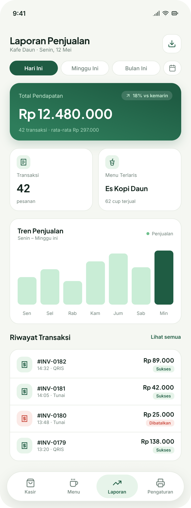
05. Laporan PenjualanKPI, grafik, riwayat 06. Detail TransaksiReprint struk 07. Manajemen MenuSearch, toggle stok, FAB 08. Pengaturan PrinterBluetooth/USB/LAN, 58/80mm 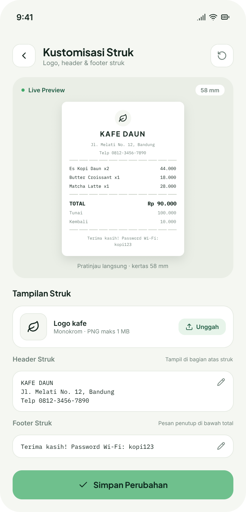
09. Kustomisasi StrukLive preview thermal
Tablet — 1024 px
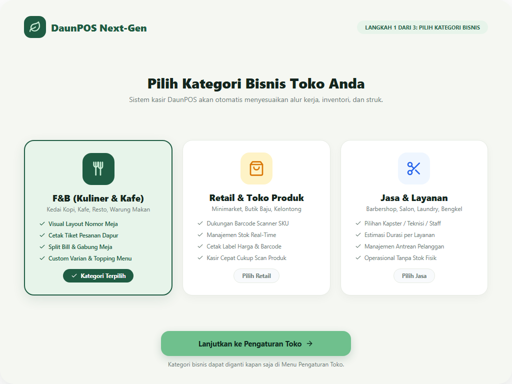
11. Pilih Kategori Bisnis Tablet BARU 3 Card hero besar dengan fitur spesifik F&B, Retail, Jasa 01. LoginSplit screen brand + keypad 02. POS / KasirGrid 4 kolom + panel keranjang 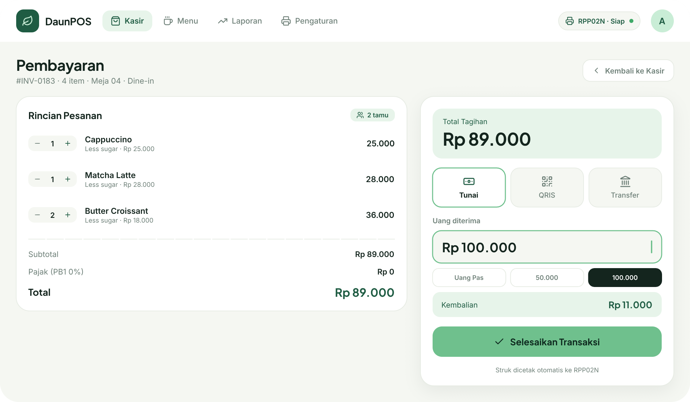
03. PembayaranRincian pesanan + kartu bayar 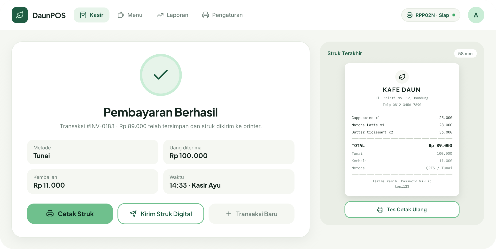
04. Transaksi BerhasilRingkasan + pratinjau struk 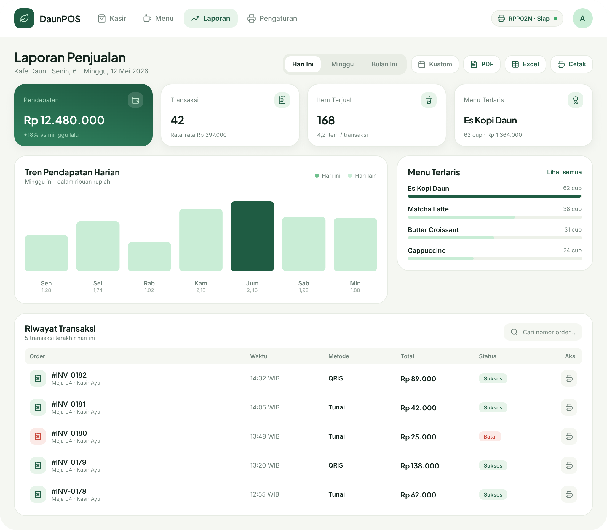
05. Laporan Penjualan4 KPI, grafik, menu terlaris, tabel 06. Detail TransaksiTabel item + info pembayaran 07. Manajemen MenuTabel menu + toggle stok 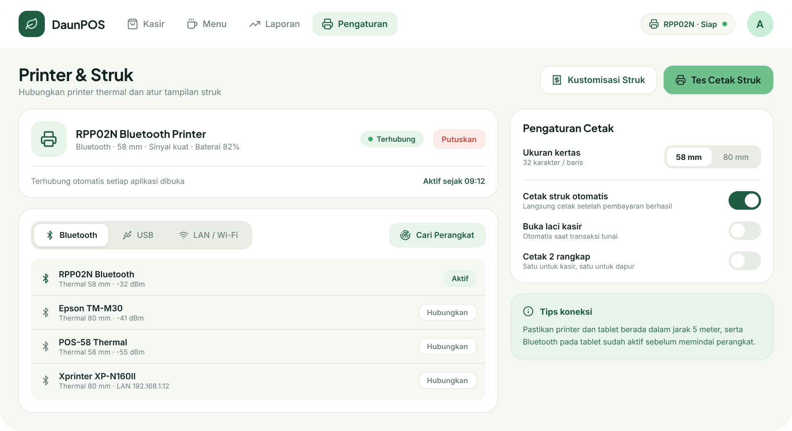
08. Pengaturan PrinterPemindai + pengaturan cetak 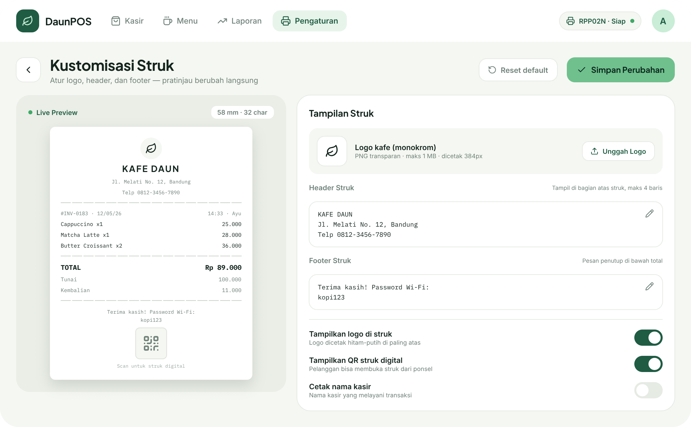
09. Kustomisasi StrukPreview besar + form
Master Project File: DaunPOS.pen (OpenPen / Pencil Studio) · PDF: DaunPOS-semua-halaman.pdf